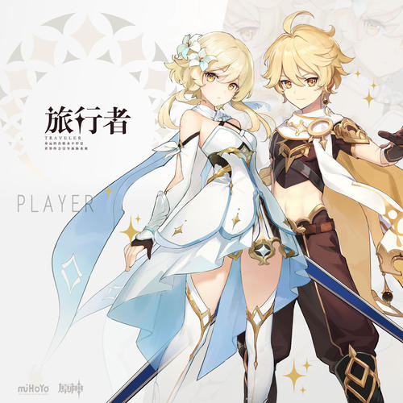
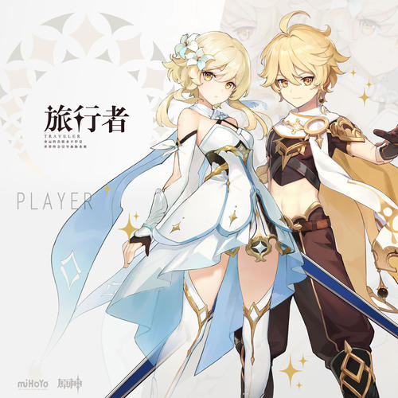

登场角色
派蒙

旅行者（主角）
《原神》是由中国大陆游戏开发商米哈游开发、基于抽卡的基本免费及道具收费、奇幻开放世界冒险动作角色扮演游戏，已于2020年9月28日发行。游戏平台包括Android、iOS、MicrosoftWindows、PlayStation4以及任天堂Switch。原神系列是由米哈游在崩坏系列之后制作以及发行的首个游戏。
设定：在一个被称作“提瓦特”的世界，被神明选中的人将被授予引导元素力量的“神之眼”，这些人被称为“原神”。玩家将扮演“旅行者”与性格各异、能力独特的同伴们一起冒险旅行，并发掘“原神”的真相。 玩家可以选择扮演旅行者中的哥哥或者妹妹，寻找自己失散的唯一亲人。
玩法：游戏为开放世界地图，除了正常的步行外，玩家可以透过攀爬、游泳、滑翔等移动手段来探索各式各样的遗迹和地形
“元素系统”是本作的特色，游戏中共有风、火、雷、水、冰、草、岩七种属性，各元素间相辅相克造成不同元素反应：
派蒙
旅行者（主角）
| 城市 | 人物 | 城市 | 人物 |
|---|---|---|---|
| 琴 | 魈 | ||
| 丽莎 | 北斗 | ||
| 凯亚 | 凝光 | ||
| 芭芭拉 | 香菱 | ||
| 迪卢克 | 行秋 | ||
| 雷泽 | 七七 | ||
| 蒙德城 | 温蒂 | 璃月港 | 重云 |
| 可莉 | 刻晴 | ||
| 安博 | 钟离 | ||
| 班尼特 | 甘雨 | ||
| 砂糖 | 胡桃 | ||
| 莫娜 | |||
| 迪奥娜 | |||
| 阿贝多 |
如果你感兴趣的话可以访问原神官网哦